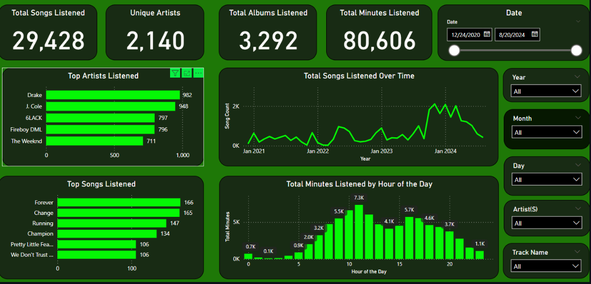

About Me
Hi! I’m Wambui, a data analyst with a thing for clarity, context, and turning messy
numbers into something that actually makes sense.
I have worked across marketing, operations, consulting, and social impact, using tools
like SQL, Python, Power BI, Excel, Azure, and Metabase to help teams work smarter
(and complain less).
My focus is understanding behavior, spotting patterns, and making it easier for
people to make better decisions without needing a translator for their data.
I care about more than just dashboards and KPIs. I care about telling the right
story at the right time, with visuals that actually say something.
If you need someone who can experiment, automate the repetitive stuff, and find
the useful story in a sea of charts… that’s my lane. I’m fluent in SQL, Excel (the advanced kind, not just SUM and cry), Python, and R,
and I’m comfortable working with BI tools like Power BI, Mixpanel, and Metabase.
Always looking for smarter, faster, more efficient ways to work (without turning
into a robot in the process)
Currently vibing to Afro House.
Projects Overview
✨ Just the recent highlights below, for more projects (and possibly some experimental chaos),
head over to
GitHub
.
Web Monitoring System for BooksToScrape.com
A production-grade web monitoring system built with Scrapy,
FastAPI, and MongoDB. The system continuously
crawls BooksToScrape.com, detects changes in product data, stores historical
snapshots, and exposes the data through a secure REST API.
It automates daily crawls, tracks price and availability changes, generates
CSV and JSON reports, and supports filtering, pagination, authentication,
and rate limiting. Designed with modular architecture and production
deployment in mind.
Scrapy
FastAPI
MongoDB Atlas
APScheduler
Pydantic
API Key Auth
Rate Limiting
CSV / JSON Reports
Key Takeaways
- Implemented fault-tolerant crawling with retries, pagination, and job resumption.
- Designed MongoDB schemas to store raw HTML, snapshots, and change logs.
- Built automated daily scheduling and report generation using APScheduler.
- Developed a secure FastAPI REST API with filtering, pagination, and rate limits.
- Structured the project using production-grade modular architecture.

My Spotify Wrapped (Personal Listening Analytics)
A data analytics passion project focused on understanding long-term music
listening behavior using Spotify playlist data. The project involved
rigorous data cleaning, preprocessing, and feature engineering to transform
raw playlist exports into a structured, analysis-ready dataset.
Using Python and pandas, I handled missing values, standardized artist and
track metadata, normalized timestamps, and engineered metrics such as
listening frequency, artist dominance, and genre distribution. The cleaned
dataset enabled accurate exploratory analysis and visualization of listening
trends over time.
Python
Pandas
Data Cleaning
EDA
Feature Engineering
Time Series
PowerBI
Key Takeaways
- Performed extensive data cleaning to resolve missing, inconsistent, and duplicated records.
- Standardized and normalized playlist metadata for reliable analysis.
- Engineered listening metrics to uncover long-term behavior patterns.
- Applied exploratory data analysis to identify trends in genre and artist preferences.
- Demonstrated the importance of data quality before visualization and insight generation.
Motor Insurance Claim Prediction Using Machine Learning
A data science project focused on predicting motor insurance claim likelihood
using historical policyholder and vehicle data. The objective was to support
insurance providers in risk assessment, claim classification, and resource
allocation by identifying policies with a higher probability of claim occurrence.
The project involved extensive exploratory data analysis and feature engineering
on a high-dimensional dataset containing demographic, vehicle, safety, and
geographic attributes. Variance-based feature selection was applied to remove
low-impact variables, reducing dimensionality while preserving predictive signal.
A Gaussian Naive Bayes classifier was trained to model claim probability, leveraging
the relative independence of selected features. The model was evaluated on unseen
data and applied to a separate test dataset to simulate real-world prediction
scenarios.
Python
Pandas
NumPy
Scikit-learn
Feature Selection
Naive Bayes
Classification
Insurance Analytics
Key Takeaways
- Applied variance thresholding to reduce feature dimensionality from 43 to 29 variables.
- Designed an end-to-end machine learning pipeline from raw data to prediction.
- Used Naive Bayes to model insurance claim likelihood under feature independence assumptions.
- Evaluated model performance using train-test splits and accuracy metrics.
- Translated insurance business challenges into a practical predictive modeling solution.
End-to-End Data Ingestion & Monitoring Using Microsoft Fabric
A modern data engineering project built using Microsoft Fabric to ingest,
store, and monitor external web data within a Lakehouse architecture. The
focus of this project was to demonstrate hands-on experience with Fabric’s
unified analytics platform, including notebooks, pipelines, Delta tables,
and reporting.
Dynamic data was ingested into a Fabric Lakehouse and stored as Delta tables
with time intelligence enabled, allowing historical tracking and trend
analysis. Fabric notebooks were orchestrated using pipelines to enable
scheduled refreshes and continuous data logging.
Semantic models and Power BI reports were built directly on top of the
Lakehouse, ensuring refreshed data was automatically reflected across
dashboards. Fabric Data Activator was used to monitor thresholds and trigger
alerts when defined conditions were met.
Microsoft Fabric
Lakehouse
Delta Tables
Fabric Notebooks
Pipelines
Power BI
Data Activator
Time Intelligence
Key Takeaways
- Implemented a Lakehouse architecture using Microsoft Fabric and Delta tables.
- Automated data ingestion and refresh cycles using Fabric pipelines.
- Enabled historical tracking and time-based analysis of ingested data.
- Built Power BI reports directly on top of Fabric Lakehouse tables.
- Configured Fabric Data Activator for threshold-based monitoring and alerts.